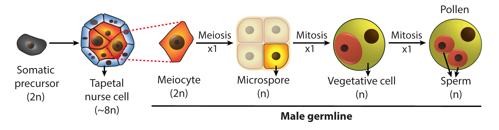

Germ cells are “immortal” as they can be indefinitely transmitted through generations. A key regulator of their immortality is the genome-wide reprogramming of the chromatin state beyond the genetic (called ‘epigenetic’) code. Understanding this reprogramming is a crucial aspect of germline biology. Conversely, germlines are also essential for understanding epigenetics because they mediate inheritance and uniquely undergo large-scale epigenetic changes.
Compared to animals, plant germlines differentiate much later and undergo distinct epigenetic changes despite highly conserved epigenetic pathways. These differences make plant germlines invaluable for revealing the core principles of epigenetics and sexual reproduction. Plant germlines are also of enormous practical significance because they produce the seeds that comprise most of our staple food.
We established the Arabidopsis male germline – composed of four cell types produced by three sequential cell divisions – as a model system, and developed advanced techniques for cell isolation, super-resolution imaging and epigenomic analysis. The ability to examine each germline cell type, combined with the high tolerance of Arabidopsis for epigenetic disruption, allows precise and powerful genetic analysis.
Using this unique system, we aim to elucidate the scope, mechanism and biological significance of plant germline epigenetic reprogramming. We have three interconnected research themes that focus on the reprogramming of DNA methylation, regulation of chromatin compaction, and the role of chromatin in mediating heat tolerance in the germline. The experimental tractability of the Arabidopsis male germline allows us to address key aspects of germline epigenetics and reproductive biology.
Recently our laboratory settled the long debate over the existence of DNA methylation reprogramming in plant germlines [Walker, et al. (2018)]. It is well established that mammalian germlines undergo global demethylation and remethylation, which are essential for germline development. Whether DNA methylation reprogramming also occurs in true plant germlines, and whether it regulates development had been unclear and controversial. My lab discovered the existence of germline methylation reprogramming in Arabidopsis, and revealed that it manifests as methylation of specific genes in the male germline. We further demonstrated that this reprogramming is catalyzed by the sRNA-directed DNA methylation pathway (RdDM), which controls gene expression and promotes meiosis. This work [Walker, et al. (2018)] proved functional methylation reprogramming in plant germlines, and established a novel regulatory paradigm in which de novo methylation creates a cell-lineage-specific epigenetic signature that controls gene expression and cellular function in flowering plants. Now we are working to reveal the molecular mechanisms underlying germline-specific DNA methylation in plants.
The sperm and its companion vegetative cell (VC; see germline figure above) in the germline exhibit drastically different chromatin states – the VC nucleus is diffuse and enlarged, whereas the sperm nucleus is the most compacted nucleus of any plant cell. In this theme, we elucidate how chromatin factors drive this large chromatin dimorphism in the pollen. For example, we recently found that linker histone H1 is present in sperm but absent in the VC, and demonstrated that H1 depletion in the VC contributes to heterochromatin decondensation, DNA demethylation and transposon reactivation, and is important for male fertility [He, et al. (2019)].
Reproductive development, especially on the male side, is the most vulnerable stage for temperature damage during the plant life cycle. Heat stresses cause dramatic yield decreases in crops such as wheat, rice and tomato, primarily due to impaired pollen development. Although the temperature sensitivity of male reproduction has been recognized as an important issue for many years, its molecular basis is unclear. In this theme, we aim to reveal the genetic and epigenetic mechanisms underlying male thermosensitivity. This knowledge can be exploited to improve the resilience of crops to temperature stress, or engineer conditional male sterility lines valuable for hybrid breeding.